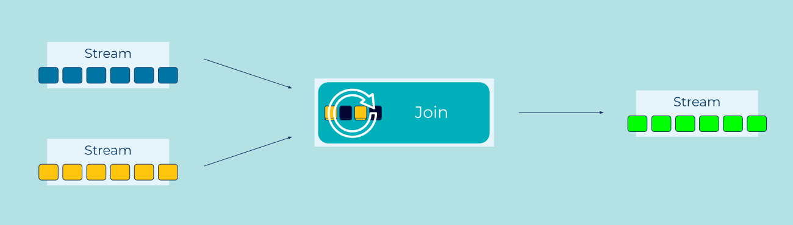

Logical AND
Event Streams become more interesting when they're considered together. It's often the case that when two separate Events occur, it triggers a new fact that we want to capture.
A product can only be dispatched when there's an order and a successful payment. If someone places a bet and their horse wins, then we transfer money to them.
How do we combine information from several different event streams and use them to make new events?
Problem
How can an application trigger processing when two (or more) related events arrive on different streams?
Solution

Multiple streams of events can be joined together, similar to joins in a relational database. We watch the streams and remember their most recent events (e.g., via an in-memory cache, a local or network storage device) for a certain amount of time. Whenever a new event arrives, we consider it alongside the other recently-captured events and look for matches. If we find one, we emit a new event.
For stream-stream joins, it's important to think about what we consider to be a "recent" event. We can't join brand new events with arbitrarily-old ones - to join potentially-infinite streams would require potentially-infinite memory. Instead we decide on a retention period that counts as "new enough", and only hold on to events in that period. This is often just fine - a payment will usually happen soon after a order is placed. If it doesn't go through within the hour, we can reasonably expect a different process to chase the user for updated credit card details.
Implementation
As an example, imagine a bank that captures logins to their website,
and withdrawals from an ATM. The fraud department might be keen to
hear if the same user_id logs in in one country, and makes a
withdrawal in a different country, within the same day. (This would
not necessarily be fraud, but it's certainly suspicious!)
To implement this example, we'll use ksqlDB. We start with two event streams:
-- For simplicity's sake, we'll assume that IP addresses
-- have already been converted into country codes.
CREATE OR REPLACE STREAM logins (
user_id BIGINT,
country_code VARCHAR
) WITH (
KAFKA_TOPIC = 'logins_topic',
VALUE_FORMAT = 'AVRO',
PARTITIONS = 3
);
CREATE OR REPLACE STREAM withdrawals (
user_id BIGINT,
country_code VARCHAR,
amount DECIMAL(10,2),
success BOOLEAN
) WITH (
KAFKA_TOPIC = 'withdrawals_topic',
VALUE_FORMAT = 'AVRO',
PARTITIONS = 3
);
We can now join those two streams. Events with the same user_id are
considered equal, and we'll specifically look at events that happen
WITHIN 1 DAY:
CREATE STREAM possible_frauds
AS
SELECT l.user_id, l.country_code, w.country_code, w.amount, w.success
FROM logins l JOIN withdrawals w
WITHIN 1 DAY
ON l.user_id = w.user_id
WHERE l.country_code != w.country_code
EMIT CHANGES;
Querying that stream in one terminal:
SELECT *
FROM possible_frauds
EMIT CHANGES;
...and inserting some data in another:
INSERT INTO logins (user_id, country_code) VALUES (1, 'gb');
INSERT INTO logins (user_id, country_code) VALUES (2, 'us');
INSERT INTO logins (user_id, country_code) VALUES (3, 'be');
INSERT INTO logins (user_id, country_code) VALUES (2, 'us');
INSERT INTO withdrawals (user_id, country_code, amount, success) VALUES (1, 'gb', 10.00, true);
INSERT INTO withdrawals (user_id, country_code, amount, success) VALUES (1, 'au', 250.00, true);
INSERT INTO withdrawals (user_id, country_code, amount, success) VALUES (2, 'us', 50.00, true);
INSERT INTO withdrawals (user_id, country_code, amount, success) VALUES (3, 'be', 20.00, true);
INSERT INTO withdrawals (user_id, country_code, amount, success) VALUES (2, 'fr', 20.00, true);
Results in a stream of possible fraud cases that need further investigation:
+-----------+----------------+----------------+--------+---------+
|L_USER_ID |L_COUNTRY_CODE |W_COUNTRY_CODE |AMOUNT |SUCCESS |
+-----------+----------------+----------------+--------+---------+
|1 |gb |au |250.00 |true |
|2 |us |fr |20.00 |true |
|2 |us |fr |20.00 |true |
Considerations
Joining event streams is fairly simple. The big consideration is how large a retention period we need, and so the resources our join will use. Planning that tradeoff requires careful consideration of the specific problem we're solving.
For large retention periods, consider joining a stream to a Projection Table instead.
References
See also:
- Joining Streams and Tables in the ksqlDB documentation.
- The Pipeline pattern, for considering events in series (rather than in parallel).
- The Projection Table pattern, for a memory-efficient way of considering a stream over a potentially-infinite time-period.
- Designing Event Driven Systems - "Chapter 14: Kafka Streams and KSQL" for further discussion.